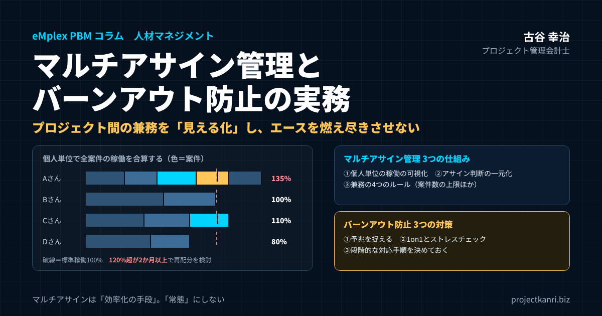

マルチアサイン管理とバーンアウト防止の実務―プロジェクト間の兼務を「見える化」し、エースを燃え尽きさせない仕組み

結論：マルチアサインは「効率化の手段」であり、「常態」にしてはなりません
この記事の要点
- マルチアサインとは：一人が同じ期間に複数のプロジェクトに配置されている状態。有効な手段だが「常態」にしない
- 見えにくさの正体：案件別の管理では、個人の総稼働と切り替え・調整のコストが見えない
- マルチアサイン管理の3つの仕組み：①個人単位の稼働の可視化 ②アサイン判断の一元化 ③兼務の4つのルール
- 危険信号の目安：標準稼働の120％超が2か月以上、または同時担当が3案件超の状態が続く
- バーンアウト防止の3つの対策：①予兆の把握 ②1on1とストレスチェック ③段階的な対応手順
- 土台：負荷を打ち明けても不利益にならない評価制度と、経営陣の行動
最初に結論を申し上げます。一人のメンバーに複数のプロジェクトを掛け持ちさせるマルチアサインは、限られた人材で幅広い案件に対応するための、有効な手段です。しかし、それを恒常的な体制として当然のものにしてしまうと、一人ひとりの負荷が組織から見えなくなり、気づかないうちに離職やメンタルヘルスの不調につながるリスクを抱えることになります。マルチアサインは、あくまで一時的な調整弁として位置づけ、常態化させないという原則を、組織として持つ必要があります。
「稼働率百パーセント超え」を、優秀さの証だと捉えていませんか。複数のプロジェクトから声がかかり、どの案件でも頼りにされ、休む暇もなく働いている。そうしたメンバーは、多くの会社で「エース」と呼ばれ、称賛されます。しかし、その状態が何か月も続いているとしたら、それは称賛すべきことではなく、組織として手を打つべき危険信号です。エースが倒れたとき、その人が掛け持ちしていたすべてのプロジェクトが同時に止まります。そして、倒れたエースが元の状態に戻るまでには、長い時間がかかります。場合によっては、会社を去ってしまうこともあります。
私はプロジェクト管理会計の専門家として、これまで200社を超えるプロジェクト型企業の経営管理の仕組みづくりを支援してきました。その中で、利益の管理と同じくらい重要だと感じるようになったのが、人の負荷の管理です。プロジェクト型ビジネスでは、売上を生み出しているのも、原価の大部分を占めているのも、人の時間です。その人が疲弊して力を発揮できなくなれば、どれほど優れた案件を受注していても、利益は生まれません。人の負荷を管理することは、福利厚生の問題である以前に、経営の問題なのです。
私が新卒で入社した朋友建設は、後に和議という局面を迎えました。その過程で、現場の人たちが限界まで働き続け、それでも会社の状況が好転しない姿を目の当たりにしました。人の頑張りに頼って数字を支える経営には、必ず限界が来ます。そのとき学んだのは、人の負荷を見える化し、仕組みで守ることは、会社を守ることそのものだということでした。
マルチアサインの問題が難しいのは、それが多くの場合、善意と合理性から始まることです。プロジェクトマネージャーは、自分の案件を成功させるために、信頼できるメンバーを求めます。メンバーは、頼られることにやりがいを感じ、依頼を引き受けます。経営陣は、限られた人員で多くの案件をこなせることを、効率の良さとして歓迎します。誰も悪いことをしていないのに、一人のメンバーに負荷が積み重なっていく。この構造を理解し、仕組みで防ぐことが、本稿のテーマです。
マルチアサインの管理は、特別な制度や大きな投資を必要とするものではありません。すでに記録している工数のデータを個人の側から集計し、アサインの判断の流れを整え、対話の機会を定期的に持つ。基本的な仕組みの組み合わせで、負荷の偏りの多くは防ぐことができます。大切なのは、それを「いつかやるべきこと」ではなく、「今、経営として取り組むべきこと」として位置づけることです。
なお、本稿は2026年9月に公開した同じテーマのコラムを、大幅に加筆したものです。初版では三つの仕組みの骨格をお伝えしましたが、今回は、負荷が見えにくくなる構造、具体的な指標と基準、予兆の捉え方、法令との関係、業種ごとの注意点、事例などを加え、経営者や人事部門、プロジェクトマネージャーの方が、自社の体制を点検する際に使えるよう、内容を大きく掘り下げています。
マルチアサインとは：兼務との違いと、本稿での定義
本稿でいう「マルチアサイン」とは、一人のメンバーが、同じ期間に複数のプロジェクトに配置されている状態を指します。同じ顧客の複数の案件を担当する場合も、異なる顧客の案件を掛け持ちする場合も、社内のプロジェクトと顧客の案件を兼ねる場合も含みます。また、「兼務」は、職能の部署に所属しながら、複数のプロジェクトの業務を担う働き方を広く指す言葉として使っています。
マルチアサインと似た言葉に「兼務」があります。兼務は、一般に、一人の社員が複数の部署や役職に同時に就いている状態を指し、組織上の所属の重なりを表す言葉です。これに対してマルチアサインは、プロジェクトへの配置の重なりを表す言葉です。所属する部署は一つでも、同じ期間に複数のプロジェクトに配置されていれば、それはマルチアサインです。
| マルチアサイン | 兼務 | |
|---|---|---|
| 重なっているもの | プロジェクトへの配置 | 部署・役職への所属 |
| 記録される場所 | 工数・アサインの記録（残らないことも多い） | 人事の記録・組織図 |
| 決まり方 | PMの依頼や現場の判断で積み重なりやすい | 人事の発令で決まる |
| 負荷の見えやすさ | 見えにくい（意識して集計が必要） | 比較的見えやすい |
プロジェクト型ビジネスで負荷の偏りを生むのは、多くの場合、組織図には表れないマルチアサインのほうです。組織上の兼務は人事の記録に残りますが、プロジェクトへの配置の重なりは、プロジェクトマネージャー同士の口約束や、その場の判断で積み重なっていくことが少なくありません。だからこそ、マルチアサインは、意識して管理しなければ見えないのです。本稿のタイトルにある「プロジェクト間の兼務」も、このマルチアサインの意味で使っています。
バーンアウト（燃え尽き症候群）とは：3つの特徴と、組織にとっての損失
バーンアウトは、燃え尽き症候群とも呼ばれ、慢性的な職場のストレスがうまく対処されないまま続いた結果として生じる状態です。世界保健機関は、これを病気ではなく職業上の現象として位置づけ、極度の疲弊感、仕事への心理的な距離や否定的な感情、そして仕事の効力感の低下という三つの側面で特徴づけています。
| 特徴 | 職場で見られる変化の例 |
|---|---|
| ① 極度の疲弊感 | 疲れが抜けない、休日明けも回復しない、遅刻や体調不良が増える |
| ② 仕事への心理的な距離・否定的な感情 | 以前は熱心だった仕事に冷める、発言が減る、皮肉な言動が増える |
| ③ 仕事の効力感の低下 | 「成果を出せていない」と感じる、単純なミスが増える、判断が遅くなる |
※WHOの国際疾病分類（ICD-11）における職業上の現象としての位置づけにもとづく整理。診断は医師などの専門家が行います。
三つの特徴は、多くの場合、この順番で表れます。まず、疲れが抜けない状態が続きます。次に、仕事に対して距離を置くようになり、以前は熱心だった仕事に冷めた態度をとるようになります。そして、自分は仕事で成果を出せていない、という感覚が強まっていきます。最初の疲弊の段階で手を打てるかどうかが、バーンアウト防止の分かれ目です。
バーンアウトによる損失は、本人の苦しみだけにとどまりません。休職や離職が発生すれば、その人が担っていた案件の引き継ぎに多大な工数がかかり、顧客との関係にも影響が出ます。採用と育成には、さらに長い時間と費用がかかります。周囲のメンバーには、抜けた穴を埋めるための追加の負荷がかかり、それが次のバーンアウトを招くという連鎖も起こり得ます。一人のバーンアウトを防ぐことは、組織全体の生産性と利益を守ることに直結しているのです。
最初にお断りしておきたいのは、本稿は医学的な診断や治療について述べるものではない、ということです。心身の不調が疑われるメンバーがいる場合には、産業医や専門の医療機関につなぐことが最優先です。本稿でお伝えするのは、そうした状態に至る前に、組織として負荷の偏りに気づき、手を打つための仕組みづくりです。
なぜプロジェクト型ビジネスでは、マルチアサインが増えるのか
マルチアサインがプロジェクト型ビジネスで広く行われているのには、はっきりとした理由があります。まずは、その利点を正しく理解しておきましょう。
第一の理由は、専門性の希少さです。特定の技術や業務の知識を持つ人材は、社内に数人しかいないことが珍しくありません。そうした人材が必要な案件が同時にいくつも動いていれば、その人を複数の案件に掛け持ちさせるしかありません。
第二の理由は、案件ごとの必要工数の波です。プロジェクトは、工程によって必要な人員が大きく変わります。設計の段階では少人数で済んでも、開発や制作の段階では多くの人が必要になり、終盤には再び少人数になる。一人のメンバーを一つの案件に専任させると、工数の少ない時期に手が空いてしまいます。複数の案件を掛け持ちさせることで、それぞれの案件の波を平準化し、メンバーの稼働を安定させることができます。
第三の理由は、稼働率の向上です。前回のコラム「稼働率と生産性を同時に上げる工数管理術」でもお伝えしたとおり、プロジェクト型ビジネスの利益は、社員の時間をどれだけ売上につながる仕事に振り向けられるかに大きく左右されます。案件と案件の間の待機時間を減らすために、マルチアサインは有効な手段です。
第四の理由は、知識の横展開です。複数の案件に関わるメンバーは、ある案件で得た知見や解決策を、別の案件に持ち込むことができます。組織全体の学習を速める効果があるのです。
マルチアサインの隠れたコスト：切り替え・調整・待ち
このように、マルチアサインには確かな利点があります。しかし、その裏側には、見落とされがちなコストがあります。
一つ目のコストは、切り替えのコストです。人は、ある仕事から別の仕事に頭を切り替えるたびに、一定の時間とエネルギーを消費します。前の案件の文脈を頭から追い出し、次の案件の状況を思い出し、集中できる状態に戻るまでには、少なからぬ時間がかかります。掛け持ちする案件の数が増えるほど、この切り替えの回数は増え、一日のうちの実質的な作業時間は目減りしていきます。三つの案件を掛け持ちするメンバーの生産性は、一つの案件に専念するメンバーの三分の一の仕事を三つこなすのではなく、それよりもかなり低くなると考えておくべきです。
二つ目のコストは、調整のコストです。複数の案件に関わるメンバーは、それぞれの案件の会議に出席し、それぞれのプロジェクトマネージャーと予定を調整し、それぞれの案件の進捗を報告しなければなりません。案件の数に比例して、こうした調整の時間は増えていきます。そして、複数の案件の締め切りが重なったとき、どちらを優先すべきかという判断を、メンバー自身が迫られることになります。
三つ目のコストは、待ちのコストです。マルチアサインのメンバーが別の案件の作業をしている間、その人の作業を待っている他のメンバーの手が止まります。一人のボトルネックが、複数の案件の進行を同時に遅らせることがあるのです。
| コスト | 内容 | 工数記録への表れ方 |
|---|---|---|
| 切り替えのコスト | 案件を移るたびに文脈を思い出し、集中を取り戻す時間 | 各案件の作業時間に溶け込む |
| 調整のコスト | 複数の会議への出席、PM間の予定調整 | 会議・社内業務に分散 |
| 待ちのコスト | その人の作業を待つ他メンバーの手待ち | 他メンバーの工数に表れる |
これらのコストは、工数の記録には直接は表れません。切り替えや調整に使われた時間は、各案件の作業時間の中に溶け込んで記録されるからです。マルチアサインの本当のコストが見えにくいのは、こうした理由によります。
ここで、切り替えのコストがどれほど大きいかを、簡単な例で考えてみます。一日八時間のうち、三つの案件を行き来し、一日に六回、仕事を切り替えるメンバーがいるとします。切り替えのたびに、前の仕事から頭を離し、次の仕事に集中できるまでに十五分かかるとすれば、一日に一時間半、週に七時間半が、実質的に失われていることになります。これは、週の稼働時間のおよそ二割に相当します。本人は一日中忙しく働いているのに、成果は思うように上がらない。その理由の一つが、この見えないコストなのです。
このように考えると、マルチアサインの判断は、利点とコストを比べて行うべきものだと分かります。専門性の希少さや工数の波の平準化といった理由で掛け持ちが必要な場合でも、その数や組み合わせを工夫することで、コストを小さくすることができます。たとえば、似た技術や業務知識を使う案件どうしを組み合わせる、一日の中で案件を細かく行き来するのではなく、曜日や時間帯で担当を分ける、といった工夫です。マルチアサインは避けられないものであっても、その設計次第で、負荷の大きさは大きく変わるのです。
さらに、マルチアサインのメンバーは、各案件の中で「部分的な参加者」になりがちです。一つの案件に専念していれば、案件の全体像を把握し、先を見越して動くことができます。しかし、複数の案件に少しずつ関わっていると、どの案件でも全体像を十分に把握できず、指示を待つ受け身の働き方になりやすいのです。その結果、仕事への主体性や達成感が薄れ、やりがいを感じにくくなることがあります。これは、バーンアウトの側面の一つである「仕事の効力感の低下」にもつながり得る問題です。
マルチアサインの利点とコストのどちらが大きいかは、案件の組み合わせ方、掛け持ちの数、期間の長さによって変わります。短期間の掛け持ちであれば利点が上回ることが多くても、同じ状態が何か月も続けば、コストと疲労が静かに積み上がっていきます。
なぜマルチアサインの負荷は見えにくいのか
マルチアサインの負荷が問題になる最大の理由は、それが組織の誰の目にも入らないまま積み重なっていくことにあります。
一つのプロジェクトの管理者は、自分の案件におけるそのメンバーの稼働状況しか把握できません。プロジェクトマネージャーAから見れば、メンバーは週に二十時間、自分の案件に関わっている。プロジェクトマネージャーBから見ても、週に二十時間。プロジェクトマネージャーCから見ても、週に十五時間。それぞれの管理者にとっては、無理のない範囲の依頼に見えます。しかし、メンバー本人にとっては、合計で週五十五時間。そこに社内会議や管理業務が加われば、週六十時間を超える状態になっています。
複数の案件を横断して、その人がどれだけの総稼働を抱えているのかは、案件別の管理では見えません。全社的な視点を持つ人事部門や経営陣が、意識的にデータを集約しない限り、実態は誰の目にも入らないまま進んでいきます。この「誰も全体を見ていない」という構造そのものが、マルチアサインの負荷を見えにくくしている根本的な原因です。
さらに、多くの会社では、組織の構造がこの問題を悪化させています。社員は職能別の部署、たとえば開発部やデザイン部に所属し、部署の上長がいます。一方で、日々の仕事の指示は、各プロジェクトのマネージャーから受けています。いわゆるマトリクス型の組織です。この形では、部署の上長は部下の日々の仕事の中身を詳しく知らず、プロジェクトマネージャーは自分の案件以外の仕事を知りません。部下の総負荷に責任を持つ人が、事実上いないのです。
工数の記録の方法も、負荷を見えにくくする要因になります。多くの会社の工数管理は、案件の原価を把握するために設計されています。案件ごとに何時間使われたかは集計されますが、個人ごとに全案件の合計を見る仕組みは用意されていないことがあります。また、月末にまとめて入力される工数は、実際の働き方を正確に反映していない可能性があります。長時間の残業が、工数の記録にも勤怠の記録にも正しく表れていないこともあります。
もう一つ見落とせないのが、負荷の「質」の問題です。同じ週五十時間でも、一つの案件に集中している五十時間と、四つの案件を行き来している五十時間とでは、心身への負担はまったく違います。先ほど述べた切り替えや調整のコストは、時間の数字には表れにくい負担です。また、案件の難しさ、顧客との関係の緊張度、責任の重さといった要素も、時間だけでは測れません。
見えにくさを生むもう一つの要因は、評価の仕組みです。多くの会社では、複数の案件で頼りにされることが、優秀さの証として肯定的に受け止められています。そのため、負荷が高いことは問題として認識されるどころか、むしろ評価の対象になることさえあります。本人も周囲も、その状態を問題として捉える動機がないのです。負荷を見える化する仕組みを作ると同時に、負荷が高い状態を「称賛すべきこと」ではなく「組織が手を打つべきこと」として捉え直す、意識の転換が必要です。
負荷の見えにくさは、リモートワークの広がりによって、さらに強まっている面もあります。同じ職場で働いていれば、遅くまで残っている同僚や、疲れた表情に気づくこともできました。しかし、自宅から複数の案件のオンライン会議を渡り歩く働き方では、そうした様子は画面越しには伝わりにくくなります。物理的に見えなくなった分、データと対話によって負荷を把握する仕組みの重要性は、以前よりも高まっているのです。
マルチアサインの負荷は、案件の採算にも影響します。負荷が高いメンバーは、切り替えのコストや疲労によって生産性が下がり、同じ作業に以前より多くの時間がかかるようになります。その結果、担当する複数の案件で工数が少しずつ超過し、採算が悪化していきます。案件ごとの工数の超過の原因を調べていくと、その背景に特定のメンバーの過負荷があった、ということは珍しくありません。人の負荷の問題は、採算の問題でもあるのです。
自社の「見えにくさ」を点検する
自社で負荷が見えにくくなっていないかを確かめるには、次の問いを投げかけてみてください。「今、社内で最も負荷の高いメンバーは誰か」「その人は、いくつの案件を掛け持ちしているか」「その人の先月の総稼働時間は何時間だったか」。この三つの問いに、誰かがすぐに正確な答えを返せるでしょうか。答えられないとすれば、それは、負荷を見る仕組みが組織に存在していないことを意味しています。
私がエンプレックスでCFOを務めていた頃、案件別の採算を管理する仕組みを整える中で、同じデータを個人の側から見ることの重要性に気づきました。案件ごとに見れば予算内に収まっている工数も、個人ごとに合算すると、特定のメンバーに負荷が極端に集中していることがあったのです。案件の採算の管理と、人の負荷の管理は、同じ工数のデータを縦から見るか、横から見るかの違いにすぎません。
こうして考えると、マルチアサインの負荷を管理するためには、三つのことが必要だと分かります。第一に、個人単位で全案件の稼働を合算して見る仕組み。第二に、その人のアサインについて、全体を見て判断する役割。第三に、時間の数字だけでは捉えられない負荷の兆候を拾い上げる仕組みです。次のセクションから、それぞれについて具体的にお伝えしていきます。
| 問い | 答えられない場合に疑うこと |
|---|---|
| 今、社内で最も負荷の高いメンバーは誰か | 個人単位の総稼働が集計されていない |
| その人は何件の案件を同時に担当しているか | アサインの記録が一元化されていない |
| その人の来月の予定工数はどれだけか | アサインの見通しが管理されていない |
| その人が最後に休暇を取ったのはいつか | 休暇の取得状況が負荷と結び付いていない |
マルチアサイン管理①：稼働データを個人単位で横断的に可視化する
マルチアサインの負荷を管理するための第一歩は、プロジェクトごとに分断されている工数のデータを、個人単位で横断的に集計する仕組みを持つことです。
具体的には、ある個人が抱える複数の案件の稼働時間を合算し、社内の業務の時間も加えたうえで、標準の稼働時間に対してどれだけ超過しているかを継続的に確認します。標準の稼働時間とは、所定の労働時間から、休暇や教育研修などの予定された時間を差し引いた、本来働くことが想定されている時間です。たとえば、所定の労働時間が月百六十時間であれば、それを標準とし、実際の総稼働時間がそれをどれだけ上回っているかを見ます。
あわせて確認したいのが、掛け持ちしている案件の数です。総稼働時間が標準の範囲内でも、同時に五つも六つも案件を抱えていれば、切り替えと調整の負担は大きくなります。私は、総稼働時間の超過率と、同時に担当している案件の数の二つを、個人ごとの負荷の基本的な指標として見ることをお勧めしています。
この集計は、月次でまとめて確認するだけでは不十分です。月末に集計して初めて超過に気づいても、その月の負荷はすでにかかってしまっています。週次で異常値を検知できる運用にしておくことが、問題の早期発見につながります。たとえば、毎週月曜日に、前週の総稼働時間が一定の水準を超えたメンバーの一覧を、リソース管理の担当者と部署の上長が確認する。そうした仕組みがあれば、負荷の偏りに一週間単位で気づくことができます。
見通しの視点も加えておきましょう。過去の稼働を確認するだけでなく、今後の数週間から数か月の間に、各メンバーにどれだけの工数が予定されているのかを見ることが重要です。複数の案件の山場が同じ時期に重なることが分かっていれば、事前に要員の配置を調整したり、スケジュールをずらしたりすることができます。負荷は、実際にかかってから対処するよりも、かかる前に避ける方が、はるかに効果的です。
そして、工数の記録そのものの信頼性を確保することも忘れてはいけません。勤怠の時間と工数の合計を突き合わせ、大きなずれがないかを確認します。工数の記録が実態より少なく入力されていれば、個人単位の集計をいくら丁寧に行っても、本当の負荷は見えません。正直な記録が評価の不利益につながらないことを、経営陣が明確に示すことが、データの信頼性の土台になります。
可視化の方法としては、一覧の表と、推移のグラフを組み合わせることをお勧めします。一覧の表では、全メンバーの今月の総稼働時間、標準に対する超過率、同時に担当する案件の数を並べ、基準を超えている人を色で目立たせます。推移のグラフでは、特定のメンバーの数か月にわたる総稼働の変化を、案件ごとの内訳とともに示します。一時的な山なのか、高止まりが続いているのかは、推移を見なければ分かりません。基準を超える状態が続いているメンバーを確実に拾い上げるには、この二つの見方が欠かせません。
個人単位の集計は、原価管理のためのデータを流用できることも利点です。案件別の採算を管理するために記録している工数は、そのまま個人単位の負荷の集計にも使えます。新たな入力の負担を現場に求めることなく、同じデータを別の角度から見るだけで、負荷の管理に必要な情報が得られるのです。
集計の結果を誰が見るのかも、あらかじめ決めておく必要があります。個人の総稼働のデータは、リソースマネジメントの責任者、部署の上長、そして人事部門が確認できるようにします。一方で、他のメンバーの詳細な稼働のデータを誰でも見られる状態にすることは、プライバシーの観点からも、不要な比較や圧力を生む観点からも避けるべきです。本人が自分の総稼働と案件ごとの内訳をいつでも確認できるようにしておくことは、自己管理の助けになります。
また、休暇の取得状況もあわせて確認しておくとよいでしょう。総稼働時間が標準の範囲内でも、長期間にわたって一日も休暇を取っていないメンバーは、心身の回復の機会を失っている可能性があります。年次有給休暇の取得状況を個人単位の稼働のデータと並べて見ることで、休めていない人を見つけ出し、計画的な休暇の取得を促すことができます。
危険信号の基準と、時間外労働の上限規制
どの水準を危険信号と考えるかは、業種やメンバーの経験によって異なります。私が支援先で一つの目安としているのは、標準の稼働時間に対して百二十パーセントを超える状態が二か月以上続いた場合には、負荷の再配分を検討する、というものです。また、同時に担当する案件の数については、職種にもよりますが、三つを超える状態が続く場合には注意が必要だと考えています。これらはあくまで目安であり、自社のデータと実際の状況を照らし合わせながら、適切な基準を定めていくことが大切です。
| 指標 | 注意 | 再配分を検討 |
|---|---|---|
| 標準稼働に対する総稼働 | 100％を超える月が続く | 120％超が2か月以上 |
| 同時に担当する案件数 | 3案件 | 3案件超が続く |
| 休暇の取得 | 長期間取得していない | 総稼働の高止まりと重なる場合 |
| 本人・周囲の訴え | ― | 訴えがあれば段階を飛ばして対応 |
※筆者が支援先で用いている目安。業種やメンバーの経験に応じて自社の基準を定めてください。
法令との関係も確認しておく必要があります。時間外労働には、法律で上限が定められています。原則は月四十五時間、年三百六十時間であり、特別な事情がある場合でも、年七百二十時間以内、単月で休日労働を含めて百時間未満、複数月の平均で八十時間以内といった上限があります。また、時間外・休日労働が月八十時間を超え、疲労の蓄積が認められる労働者から申し出があった場合には、医師による面接指導を行うことが求められています。個人単位の稼働の集計は、こうした法令の遵守状況を確認するためにも欠かせません。
| 区分 | 上限 |
|---|---|
| 原則 | 月45時間・年360時間 |
| 特別条項がある場合（年間） | 年720時間以内 |
| 特別条項がある場合（単月） | 休日労働を含め100時間未満 |
| 特別条項がある場合（複数月平均） | 休日労働を含め2〜6か月平均で80時間以内 |
| 月45時間を超えられる回数 | 年6か月まで |
| 医師による面接指導 | 時間外・休日労働が月80時間超で疲労の蓄積があり、本人の申し出がある場合 |
なお、建設業や自動車運転の業務などには、上限規制の適用が猶予されていた期間がありましたが、2024年4月からは、これらの業種にも原則として上限規制が適用されています。業種ごとの特例の内容は異なるため、自社に適用される基準を、社会保険労務士などの専門家とあわせて確認しておくことをお勧めします。
マルチアサイン管理②：アサイン判断の権限を一元化する
個人単位の負荷が見えるようになっても、それをもとにアサインを判断する仕組みがなければ、負荷の偏りは解消されません。各プロジェクトマネージャーが個別に「このメンバーを自分の案件にも入れてほしい」と依頼を重ねていくと、誰も全体像を把握しないまま、一人のメンバーに負荷が積み重なっていきます。
この問題を防ぐには、アサインの最終判断を、リソースマネジメントの機能を持つ部門や役割に一元化することが有効です。新たな案件へのアサインの依頼が来た際には、そのメンバーの現在の総稼働の状況と、今後の予定を必ず確認したうえで判断する。この運用にすることで、過負荷を未然に防ぐことができます。
リソースマネジメントの役割を誰が担うかは、会社の規模によって異なります。社員が数十人規模の会社であれば、事業部長や取締役の一人がこの役割を兼ねることが現実的です。百人を超える規模になれば、専任の担当者やチームを置くことを検討すべきでしょう。大切なのは、「個人の総負荷に責任を持つ人」を、組織の中に明確に置くことです。
アサインを一元化することに対しては、プロジェクトマネージャーから「自分の案件に必要な人を、自分で確保できなくなる」という反発が出ることがあります。しかし、個々のマネージャーが自分の案件の最適だけを追求すれば、組織全体としては最適にならず、結果として特定のメンバーが倒れ、すべての案件が影響を受けることになります。一元化は、プロジェクトマネージャーの権限を奪うためではなく、組織全体の人材という限られた資源を、持続可能な形で配分するための仕組みだと理解してもらうことが大切です。
アサインの判断には、受注の判断との連動も欠かせません。新しい案件を受注する際に、その案件を担当できる人材の手が空いているかを確認せずに受注してしまえば、既存のメンバーに無理なマルチアサインを強いることになります。営業部門が受注を検討する段階で、リソースマネジメントの責任者に要員の見通しを確認する仕組みを設けることで、受注と人材の配分の間のずれを防ぐことができます。
アサインの一元化は、人材育成の面でも効果があります。全体を見て配置を判断する役割があれば、特定のエースにばかり案件が集中するのを防ぎ、経験の浅いメンバーにも挑戦の機会を計画的に与えることができます。負荷の平準化と人材の育成は、同じ仕組みで同時に実現できるのです。
ある受託開発会社では、アサインの一元化を導入する前、エース級の三人のエンジニアが、それぞれ五つから六つの案件を掛け持ちしていました。三人とも、総稼働時間は標準の百三十パーセントを超える状態が半年以上続いていました。リソースマネジメントの役割を設け、兼務の上限を原則三案件と定めたうえで、段階的にアサインを組み替えたところ、三人の総稼働時間は一年ほどで標準の範囲に収まりました。同時に、三人が抜けた案件に若手を配置したことで、若手の成長の機会も増えました。当初は品質の低下を懸念する声もありましたが、エース級の三人が要所でレビューを行う体制にしたことで、案件の品質はむしろ安定したといいます。
一元化の運用で陥りがちなのが、リソースマネジメントの担当者が「調整役」にとどまり、実際の判断の権限を持たないことです。プロジェクトマネージャーの要望を聞いて回るだけで、最終的には声の大きいマネージャーの要望が通ってしまう。これでは一元化の意味がありません。担当者に、アサインを承認しない、あるいは変更を求める権限を明確に与え、その判断を経営陣が支持する姿勢を示すことが、仕組みを機能させる条件です。
マルチアサイン管理③：兼務の4つのルールを決める
一元化とあわせて、兼務に関するルールも定めておきます。私が支援先でお勧めしているのは、次のようなルールです。
一つ目は、同時に担当する案件の数の上限です。職種や役割に応じて、原則として同時に担当する案件は三つまで、といった上限を決めておきます。上限を超える場合には、リソースマネジメントの責任者の承認を必要とします。
二つ目は、案件ごとの配分の明示です。マルチアサインをする場合には、「案件Aに週三日、案件Bに週二日」といったように、各案件への時間の配分を明示し、関係するプロジェクトマネージャー全員で共有します。配分が曖昧なままでは、各マネージャーが自分の案件に多くの時間を求め、メンバーはその板挟みになります。
三つ目は、優先順位の決め方です。複数の案件の締め切りが重なったとき、どちらを優先するのかを、メンバー個人に判断させてはいけません。案件の間の優先順位は、リソースマネジメントの責任者や事業の責任者が決めるべきものです。メンバーが「どちらの期待にも応えなければ」と一人で抱え込む状態は、バーンアウトへの近道です。
四つ目は、アサインの見直しのタイミングです。月に一度、リソースマネジメントの責任者とプロジェクトマネージャーが集まり、各メンバーの負荷と今後の予定を確認し、必要に応じてアサインを見直す場を設けます。この場を定例化しておけば、負荷の偏りを早い段階で是正できます。
| ルール | 内容の例 |
|---|---|
| ① 案件数の上限 | 原則として同時に担当する案件は3つまで。超える場合は承認制 |
| ② 配分の明示 | 「案件Aに週3日、案件Bに週2日」と時間配分を明示 |
| ③ 優先順位の決め方 | 締め切りが重なったときの優先順位は、個人ではなく責任者が決める |
| ④ 見直しのタイミング | 月1回、リソース責任者とPMで負荷と今後の予定を確認 |
兼務のルールは、文書にして全社に周知することも大切です。ルールが一部の管理職の間だけで共有されていると、新しく着任したプロジェクトマネージャーがルールを知らずに依頼を重ねてしまいます。誰が、どのような手順でアサインを依頼し、誰が承認するのか。その流れを明文化し、プロジェクトの立ち上げの手順の中に組み込んでおくことで、ルールは個人の記憶に頼らずに守られるようになります。
バーンアウト防止①：予兆を捉える―本人の自覚と、組織の把握のずれ
バーンアウトは、ある日突然発生するものではありません。稼働率の高止まりが数か月続いた後に、成果物の質の低下や、それまで積極的だった発言が減るといった変化として、徐々に現れることが多いものです。だからこそ、予兆の段階で気づき、手を打つことが重要になります。
予兆を捉えるうえで最も注意しなければならないのが、本人の自覚と組織の把握のずれです。負荷の高いメンバーほど、責任感の強さから「自分はまだ大丈夫」と過小評価しがちです。複数の案件で頼りにされている人は、自分が抜けたら案件が回らなくなることを知っているため、なおさら弱音を吐きにくくなります。本人の自己申告だけに頼った負荷管理では、限界に近づいていることに本人自身が気づけないまま進んでしまうリスクがあります。
予兆として注目すべき変化には、いくつかの典型があります。成果物の質の低下や、それまでなかった単純なミスの増加。会議での発言の減少や、表情の変化。締め切りの遅れの増加。休暇をまったく取らない、あるいは逆に急な欠勤が増える。深夜や休日のメールやチャットの送信が増える。周囲への苛立ちや、仕事への否定的な発言が増える。こうした変化は、一つひとつは小さなものですが、複数が重なって現れる場合には、注意が必要です。
| 領域 | 変化の例 |
|---|---|
| 稼働データ | 総稼働の高止まり、深夜・休日の入力の増加、休暇の未取得 |
| 仕事の質 | 成果物の質の低下、単純なミスの増加、締め切りの遅れ |
| コミュニケーション | 会議での発言の減少、返信の遅れ、表情の変化 |
| 勤怠・体調 | 遅刻や欠勤の増加、体調不良の訴え |
これらの兆候を拾い上げるには、人事部門とプロジェクトマネージャーの間で、情報を共有する仕組みが欠かせません。プロジェクトマネージャーは日々の仕事の中でメンバーの変化に気づきやすい立場にありますが、自分の案件以外での様子は分かりません。部署の上長や人事部門は、複数の案件にまたがる情報を集約できる立場にあります。周囲からの「ちょっとした違和感」を気軽に共有できる場や経路を用意しておくことが、予兆を早期に捉えるための実務上の工夫になります。
バーンアウト防止②：1on1とストレスチェックを組み合わせる
そこで必要になるのが、定量的な稼働データと、定期的な一対一の対話、いわゆる1on1を組み合わせることです。本人の感覚と客観的なデータの両面から、負荷の兆候を捉えます。データの上で稼働が高止まりしているメンバーには、本人が大丈夫だと言っていても、意識的に対話の機会を設けます。逆に、データの上では稼働が標準の範囲内でも、1on1で疲れや迷いが見えるメンバーには、時間の数字に表れない負荷、たとえば難しい顧客との関係や、責任の重さがないかを確認します。
1on1の進め方にも工夫が必要です。業務の進捗の確認だけで終わらせず、「最近、特に負担に感じていることは何か」「複数の案件の間で、板挟みになっていることはないか」「休めているか」といった問いを、定期的に投げかけます。そして、本人が負荷を打ち明けたときには、それを評価の減点につなげず、アサインの見直しや業務の調整という具体的な行動で応えることが大切です。打ち明けても何も変わらない、あるいは不利益を受けると感じれば、本人は二度と本音を話さなくなります。
1on1を行う上長自身が、対話の方法に慣れていないことも少なくありません。部下の話を最後まで聞く、解決策を急がずに状況を確かめる、打ち明けてくれたことに感謝を伝える。こうした基本的な姿勢を、管理職向けの研修などで身につけてもらうことも、予兆を捉える仕組みの一部です。仕組みがあっても、それを運用する人の力量が伴わなければ、本音は引き出せません。
法令で定められたストレスチェックの制度も、活用すべき仕組みの一つです。常時五十人以上の労働者を使用する事業場では、年に一度のストレスチェックの実施が義務づけられています。集団ごとの分析結果を見れば、特定の部署やチームにストレスが集中していないかを把握できます。ストレスチェックの結果と、個人単位の稼働のデータを、個人情報の取り扱いに十分配慮しながら組み合わせて見ることで、組織としての課題がより立体的に見えてきます。
バーンアウト防止③：段階的な対応手順を決めておく
予兆の段階での対応として、私が支援先で勧めているのは、段階的な対応の手順をあらかじめ決めておくことです。たとえば、稼働の高止まりが一か月続いた段階では、上長が1on1で状況を確認する。二か月続いた段階では、リソースマネジメントの責任者がアサインの見直しを検討する。本人から疲れや不調の訴えがあった場合や、周囲が明らかな変化に気づいた場合には、段階を飛ばして速やかに業務の調整を行い、必要に応じて産業医につなぐ。こうした手順が決まっていれば、誰かが個人の判断で抱え込むことなく、組織として一貫した対応ができます。
| 段階 | 状況 | 対応 |
|---|---|---|
| 第1段階 | 稼働の高止まりが1か月 | 上長が1on1で状況を確認 |
| 第2段階 | 高止まりが2か月 | リソース責任者がアサインの見直しを検討 |
| 即時対応 | 本人の訴え、周囲が明らかな変化に気づいた | 段階を飛ばして業務を調整し、必要に応じて産業医へ |
そして、予兆に気づいた後の対応の速さが、結果を大きく左右します。兆候に気づいても、「今の案件が一段落するまで待とう」と対応を先送りすれば、その間に状態は悪化していきます。案件への影響よりも、人の健康を優先する。この原則を経営陣が明確に示しておくことで、現場のマネージャーは迷わずに対応を取ることができます。一時的に案件の進行が遅れることになっても、その判断を支持するのが経営の役割です。
そして、兆候が深刻な場合には、ためらわずに産業医や専門家につなぐこと。これが、何よりも優先されるべき対応です。
マネジメント層のマルチアサインと、見えにくい負荷
負荷管理の議論は、現場の担当者に焦点が向きがちです。しかし、複数のプロジェクトを統括するプロジェクトマネージャー自身も、マルチアサインの当事者であることが多くあります。
プロジェクトマネージャーの負荷は、特に見えにくいものです。自分の案件の進捗管理、顧客との折衝、メンバーの育成と調整、社内への報告。こうした管理業務は、工数の記録の上では「プロジェクト管理」という一つの区分にまとめられることが多く、その中身の重さは数字に表れにくいのです。さらに、トラブルが起きた案件では、プロジェクトマネージャーが最後の砦として対応に追われます。複数の案件を統括するマネージャーは、複数のトラブルを同時に抱えることもあります。
管理する立場にある人ほど、「自分の負荷は後回しでいい」と考えがちです。部下の負荷には気を配っても、自分自身の疲れには目をつぶってしまう。しかし、マネージャー層が疲弊すると、その影響は担当する複数のプロジェクト全体に広がります。判断が遅れ、メンバーへの目配りが行き届かなくなり、顧客との関係もぎくしゃくし始める。一人のマネージャーの不調が、複数のチームの士気と成果に波及していくのです。経営陣は、現場のメンバーだけでなく、管理者層の負荷にも同じ基準で目を配る必要があります。
私自身、ホリプロで経営企画の責任者を務めていた際に、この問題を身をもって経験しました。複数の新規事業を同時に立ち上げる中で、限られた人材が複数の事業を兼務する体制を組んでいました。当初は本人の意欲を尊重して負荷の調整を後回しにしていましたが、ある時期に、キーパーソンの一人が疲弊し、判断力が明らかに落ちていることに気づき、急遽アサインを見直しました。その人は、複数の事業の中心にいたからこそ、誰よりも忙しく、誰よりも弱音を吐けない立場にありました。この経験から、負荷は本人の意欲とは別の軸で、組織として定量的に管理すべきものだと、強く実感しました。
マネジメント層の負荷を把握するためには、プロジェクト管理の時間の中身を、もう少し細かく記録することも有効です。顧客との折衝、メンバーとの打ち合わせ、社内への報告、トラブル対応といった区分を設ければ、どの種類の業務がマネージャーの時間を圧迫しているのかが見えてきます。社内への報告に多くの時間が使われているなら、報告の方法を見直すことで負荷を減らせるかもしれません。トラブル対応が多いなら、案件の立ち上げの段階での準備に課題があるのかもしれません。
また、マネージャーの負荷を軽減するためには、プロジェクトの管理業務の一部を補佐する役割を置くことも検討に値します。進捗の集計や資料の作成、会議の調整といった業務を補佐役が担えば、マネージャーは判断と対話という本来の役割に集中できます。
マネジメント層の負荷を把握するには、経営陣自身がマネージャーとの1on1を定期的に行うことも効果的です。部下の負荷には目を配っていても、マネージャー自身の負荷を気にかける人は、組織の中にあまりいません。経営陣が「あなた自身は大丈夫か」と問いかけることが、マネージャーにとって、自分の負荷を振り返るきっかけになります。
業種ごとに異なる負荷の現れ方
マルチアサインの負荷は、業種によっても現れ方が異なります。自社の業種でどのような形で負荷が蓄積しやすいのかを理解したうえで、モニタリングの重点を定めることが、実務上の工夫になります。
ITサービス業では、複数の開発案件を並行して担当するエンジニアの、認知的な切り替えのコストが負荷として蓄積しやすい傾向があります。異なる技術の構成や業務の知識を、頭の中で何度も切り替えることは、時間の数字以上に消耗を招きます。障害対応のように予定外の割り込みが多いことも、負荷を高める要因です。
コンサルティング業では、移動を伴う複数の顧客への対応が、体力的な負荷として現れやすい傾向があります。午前は一つの顧客先、午後は別の顧客先、夜は社内で資料作成という働き方が続けば、移動時間を含めた実質的な拘束時間は、工数の記録よりもはるかに長くなります。
映像制作業では、撮影のスケジュールの重複による長時間労働が典型的なリスクです。撮影は天候や出演者の都合に左右され、予定どおりに進まないことが多いため、複数の作品を掛け持ちしているスタッフほど、予定外の延長の影響を大きく受けます。
建設業では、複数の現場を掛け持ちする施工管理の担当者の負荷が問題になりやすいものです。現場の間の移動に加え、それぞれの現場の安全管理と工程管理の責任を同時に負うことになります。
設計や広告制作の業界では、締め切りの集中が負荷の山を作りやすい傾向があります。複数の案件の納期が同じ時期に重なると、短期間に極端な長時間労働が発生しがちです。
| 業種 | 負荷の典型 | モニタリングの重点 |
|---|---|---|
| ITサービス | 複数案件の技術・文脈の切り替え | 同時担当の案件数、切り替えの頻度 |
| コンサルティング | 複数顧客先への移動と夜の資料作成 | 移動を含めた拘束時間 |
| 映像制作 | 撮影スケジュールの重複による長時間労働 | 撮影日程の重なり、連続勤務 |
| 建設 | 複数現場を掛け持つ施工管理の負荷 | 現場間の移動、安全・工程管理の責任の重なり |
| 設計・広告制作 | 締め切りの集中による短期の長時間労働 | 納期の重なり |
いずれの業種でも共通しているのは、工数の数字だけでは負荷の全体像を捉えきれないということです。業種ごとの負荷の特徴を踏まえて、移動時間、割り込みの頻度、締め切りの集中といった補助的な情報もあわせて見ることが大切です。
業種を問わず有効な対策として、案件の山場の重なりを事前に避けることも挙げておきます。受注の段階や、プロジェクトの計画の段階で、各メンバーが関わる案件の納期や山場の時期を並べて確認し、重なりが見つかればスケジュールや担当を調整する。負荷の山は、多くの場合、事前に予測できます。予測できる山を、予測どおりに避けることが、最も確実な負荷の管理です。
マルチアサインを前提とした評価制度と、組織文化の見直し
マルチアサインを健全に運用するためには、評価の仕組みも見直す必要があります。複数の案件を掛け持ちするメンバーの評価を、単一の案件の成果だけで判断してしまうと、負荷の高さに対する正当な評価が得られず、モチベーションの低下につながります。
よくあるのは、メンバーの評価を、所属部署の上長が、最も関わりの深い一つの案件の成果をもとに行うケースです。この方法では、メンバーが他の案件で果たした貢献や、複数の案件の間で行った調整の努力は、評価に反映されません。逆に、一つの案件に専念しているメンバーの方が、その案件で目立つ成果を上げやすく、評価も高くなりがちです。これでは、マルチアサインを引き受けることが、メンバーにとって損になってしまいます。
評価制度においては、担当する案件の数や、兼務による調整業務の負荷も、評価の要素として明示的に組み込むことが大切です。そのうえで、各案件のプロジェクトマネージャーから、そのメンバーの貢献について意見を集め、部署の上長が総合的に評価する仕組みにします。いわゆる多面的な評価です。こうすることで、マルチアサインを担うメンバーへの公正な評価を実現できます。
ただし、ここで注意が必要です。マルチアサインを評価で報いることが、「多くの案件を抱えるほど評価が上がる」というメッセージになってしまえば、メンバーは自ら過大な負荷を引き受けようとし、かえってバーンアウトのリスクを高めます。評価すべきなのは、抱えている案件の数そのものではなく、複数の案件の間で果たした貢献の質と、組織への影響です。また、適切に負荷を調整し、自分の限界を正直に伝えたことも、プロとしての大切な行動として評価されるべきです。評価制度とリソース管理は、別々の仕組みではなく、連動させて設計すべきものなのです。
組織の文化も見直す必要があります。「忙しいことは良いことだ」「断らない人が偉い」という文化がある組織では、どれほど仕組みを整えても、メンバーは負荷を打ち明けにくくなります。経営陣やマネージャーが、長時間労働を美徳として語ったり、休暇を取るメンバーを暗に批判したりしていないか。振り返ってみる価値があります。
組織文化を変えるうえで、最も効果があるのは、経営陣自身の行動です。経営陣が休暇をきちんと取り、長時間労働を称賛せず、負荷を打ち明けたメンバーに感謝を伝える。そうした行動を目にすることで、メンバーは「この会社では、無理をしないことが許される」と感じられるようになります。制度の文言よりも、経営陣の日々の振る舞いの方が、組織の文化に強い影響を与えるのです。
評価制度の見直しと並行して、キャリアの観点からの配慮も大切です。マルチアサインで幅広い経験を積むことは、メンバーの成長にとって大きな価値があります。一方で、一つの分野を深く掘り下げる時間が取れないことを不安に感じるメンバーもいます。1on1の場で、本人がどのようなキャリアを描いているのかを聞き、アサインの方針に反映させることで、マルチアサインを本人にとっても意味のある経験に変えることができます。
もう一つ、評価の場で確認しておきたいのが、マルチアサインの経験が次のアサインにどう生かされているかです。複数の案件を経験したメンバーは、案件の横断的な知見を持っています。その知見を、標準的な進め方の整備や、若手の指導、見積の改善に生かす役割を与えることで、本人の負荷を増やすことなく、組織への貢献の形を広げることができます。
現場からよくいただく3つの質問
ここで、よくいただく質問にお答えしておきます。
一つ目は、「稼働率が何パーセントを超えたら危険信号と考えるべきか」という質問です。業種やメンバーの経験によって適正な水準は異なりますが、先ほど述べたように、標準の稼働に対して百二十パーセントを超える状態が二か月以上続く場合は、負荷の再配分を検討すべき目安の一つです。あわせて、法令で定められた時間外労働の上限と、医師の面接指導の基準も必ず確認してください。
二つ目は、「本人が兼務を希望している場合は、どう対応すべきか」という質問です。本人の意欲は尊重すべきですが、本人の希望であっても、客観的な稼働データを継続的に確認し、限界に近づいた兆候があれば早めに対話する姿勢を保つことが重要です。意欲の高い人ほど、自分の限界を超えて走り続けてしまうことがあるからです。
三つ目は、「人員が足りず、マルチアサインを減らせない場合はどうすればよいか」という質問です。その場合は、受注の量や納期の設定を見直すことも、経営の選択肢に入れるべきです。人員の供給力を超えて受注を続ければ、いずれ誰かが倒れ、結果としてより大きな損失を招きます。協力会社の活用や採用の前倒し、案件の優先順位づけとあわせて、受注の判断そのものを、人材の供給力と連動させて行うことが大切です。
マルチアサイン管理とバーンアウト防止の導入5ステップ
最後に、マルチアサインの管理とバーンアウトの防止の仕組みを導入する流れを整理しておきます。
| ステップ | 内容 | 目安の期間 |
|---|---|---|
| ① 現状の把握 | 個人ごとの総稼働時間と同時担当の案件数を集計 | 1〜2か月 |
| ② 基準とルールの設定 | 注意・再配分の基準、兼務の4つのルール | （①と並行） |
| ③ アサインの一元化 | リソース責任者の設置、月次の見直しの場 | 2〜3か月 |
| ④ 週次のモニタリングと1on1 | 高止まりのメンバーの一覧確認と対話 | （③と並行） |
| ⑤ 評価制度の見直し | 複数案件への貢献の多面評価、負荷申告の不利益の排除 | 半年〜1年 |
最初の段階では、現状を把握します。個人ごとに、直近数か月の総稼働時間と、同時に担当している案件の数を集計します。勤怠の時間と工数の合計が一致しているかも確認します。この集計だけで、負荷が特定のメンバーに集中している実態が、はっきりと見えてくることが多いものです。
次の段階では、基準とルールを決めます。総稼働時間の超過率と、同時に担当する案件の数について、注意が必要な水準と、再配分を検討すべき水準を定めます。あわせて、兼務の上限、案件ごとの配分の明示、優先順位の決め方といったルールを決めます。
三つ目の段階で、アサインの判断の役割を一元化し、月次の見直しの場を設けます。新しい案件へのアサインや、新しい受注の判断の際に、個人の総負荷を必ず確認する流れを作ります。
四つ目の段階で、週次のモニタリングと、定期的な1on1の仕組みを整えます。稼働が高止まりしているメンバーの一覧を毎週確認し、必要に応じて対話の機会を設けます。人事部門とプロジェクトマネージャーの間で、気づいた兆候を共有する経路も用意します。
五つ目の段階で、評価制度を見直します。複数の案件への貢献を多面的に評価する仕組みを整え、負荷を正直に伝えることが不利益にならないことを、制度と運用の両面で示します。
最後に、仕組みそのものも定期的に見直してください。半年に一度程度、基準の水準は適切か、ルールは守られているか、週次のモニタリングや1on1は形骸化していないかを点検します。事業や組織の変化に合わせて仕組みを手直ししていくことで、負荷の管理は組織に根づいていきます。
導入の初期には、経営陣への報告の形も決めておくとよいでしょう。月次の経営会議で、基準を超えているメンバーの人数、その推移、主な原因、そして講じた対策を簡潔に報告します。案件の採算の報告と同じ場で、人の負荷の状況も報告されるようにすることで、経営陣は利益と人の両面から事業を見られるようになります。負荷の問題が、経営会議の定例の議題になること。それ自体が、組織に対する強いメッセージになります。
導入にかかる期間は、会社の規模にもよりますが、現状の把握から基準とルールの設定までに一か月から二か月、アサインの一元化と週次のモニタリングが定着するまでに三か月から半年程度を見ておくのが現実的です。評価制度の見直しは、次の評価の周期に合わせて行うことになるため、一年がかりの取り組みになることもあります。すべてを一度に整える必要はありません。まずは個人単位の総稼働を集計し、負荷の実態を経営陣が知ることから始めてください。
eMplex PBMで、案件の採算と人の負荷を同じ基盤で見る
私たちが提供している「eMplex PBM」のタイムシートでは、エンジニアやコンサルタントの工数を日次で記録し、上長の承認を経て、案件別の労務費の原価に反映します。同じ工数のデータから、稼働率と生産性を自動で集計できるため、案件の採算を管理するためのデータが、そのまま個人単位の負荷を管理するためのデータになります。
稼働アラートの機能を使えば、稼働が高止まりしているメンバーに早く気づくことができます。アサイン予定表で、今後どのメンバーにどの案件の工数が予定されているのかを確認すれば、複数の案件の山場が同じ時期に重なるメンバーを、負荷がかかる前に把握し、アサインやスケジュールを調整することができます。案件の採算の見通しと、人の負荷の見通しを、同じ基盤の上で見ながら判断できることが、マルチアサイン管理とバーンアウト防止を、経営の仕組みとして回すための土台になります。
まとめ：マルチアサイン管理は、会社を守る経営の仕事
マルチアサインは、限られた人材を有効に活用するための手段である一方、常態化させると個人の負荷が見えなくなり、バーンアウトのリスクを高めます。個人単位での稼働の横断的な可視化、アサイン判断の一元化、予兆を捉える対話の仕組み、そして評価制度への反映。これらの仕組みが、健全な運用を支える土台になります。人が健やかに力を発揮し続けられる組織こそが、プロジェクト型ビジネスで安定した利益を生み出し続けられる組織なのです。
最後に、経営者の皆さんにお伝えしたいことがあります。マルチアサインの問題は、人事部門だけに任せておける問題ではありません。受注の判断、要員の配置、評価の仕組み、組織の文化。そのすべてに関わる、経営そのものの問題です。まずは、社内で最も頼りにされているメンバーが、今どれだけの負荷を抱えているのかを、数字で確かめるところから始めてみてください。
マルチアサインを管理し、バーンアウトを防ぐ仕組みは、一度に完成させる必要はありません。まずは、直近数か月の個人ごとの総稼働時間と、同時に担当している案件の数を集計してみてください。その一枚の表が、自社のエースがどれだけの負荷を背負っているのかを、初めて見える形にしてくれるはずです。
よくある質問（FAQ）
Q. マルチアサインとは何ですか？
A. 一人のメンバーが、同じ期間に複数のプロジェクトに配置されている状態のことです。組織上の所属の重なりを指す「兼務」とは異なり、プロジェクトへの配置の重なりを指します。専門人材の活用や稼働率の向上に有効ですが、常態化すると個人の負荷が見えなくなります。
Q. マルチアサインで同時に担当する案件は、いくつまでが目安ですか？
A. 職種や案件の規模によりますが、筆者は同時に担当する案件が3つを超える状態が続く場合は注意が必要と考えています。案件数とあわせて、標準の稼働時間に対する総稼働の超過率も確認し、120％超が2か月以上続く場合は再配分を検討します。
Q. バーンアウト（燃え尽き症候群）とは何ですか？
A. 慢性的な職場のストレスがうまく対処されないまま続いた結果として生じる状態です。WHOは病気ではなく職業上の現象と位置づけ、極度の疲弊感、仕事への心理的な距離や否定的な感情、仕事の効力感の低下の3つの側面で特徴づけています。
Q. バーンアウトを防止するために、会社は何をすべきですか？
A. 個人単位の総稼働と案件数の可視化、アサイン判断の一元化と兼務のルール、稼働データと1on1を組み合わせた予兆の把握、段階的な対応手順の事前決定、そして負荷を打ち明けても不利益にならない評価制度と組織文化づくりが基本です。心身の不調が疑われる場合は、産業医や専門家につなぎます。
Q. 時間外労働の上限は、どのように決まっていますか？
A. 原則は月45時間・年360時間です。特別な事情がある場合でも、年720時間以内、単月で休日労働を含め100時間未満、複数月の平均で休日労働を含め80時間以内とされています。また、時間外・休日労働が月80時間を超え、疲労の蓄積が認められる労働者から申し出があれば、医師による面接指導が必要です。